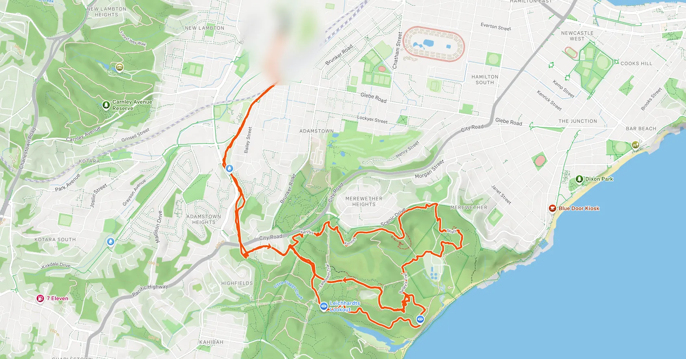

… … · … · … Loading activity… Distance– Moving time– Pace / speed– Elevation gain–  Map privacy Who can see this map Everyone Followers Only you Hide start and end points (privacy zone) Detailed analysis Show advanced data Avg heart rate– Avg power– Calories– Elevation Kudos & comments 0 kudos Add a comment Post